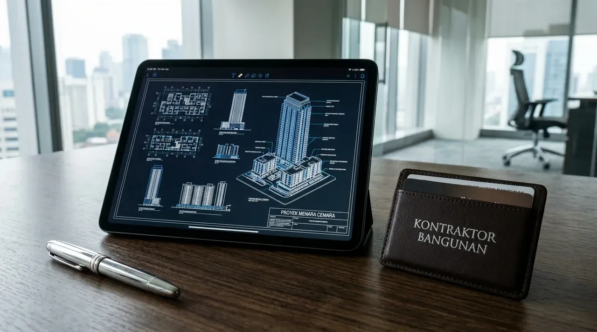

Apa Saja Materi Utama yang Dibahas Dalam Konsultasi Perizinan Bangunan Gratis?
Layanan konsultasi perizinan bangunan gratis mengulas aspek legalitas tanah, batas Garis Sempadan Bangunan (GSB), Kebutuhan Koefisien Dasar Bangunan (KDB), serta kelengkapan dokumen arsitektur dan struktur.
Memulai proses pembangunan tanpa pemahaman hukum yang rinci dapat memicu hambatan biaya dan penghentian proyek di tengah jalan. Dalam sesi konsultasi perizinan, tim ahli akan membedah empat pilar kelayakan konstruksi:
| Parameter Legalitas | Fokus Penilaian & Analisis Teknis | Output Rekomendasi |
|---|---|---|
| Kesesuaian Tata Ruang (KKPR) | Memeriksa fungsi lahan berdasarkan Peta Rencana Detail Tata Ruang (RDTR) daerah. | Kepastian zona peruntukan (Hunian, Komersial, atau Industri). |
| Kriteria Koefisien Bangunan | Menghitung rasio KDB, KLB (Koefisien Lantai Bangunan), dan KDH (Hijau). | Batas maksimal luas lantai dan ketinggian gedung yang diizinkan. |
| Ketentuan Sempadan (GSB) | Menentukan jarak bebas minimum antara dinding luar bangunan dengan bahu jalan. | Posisi denah tapak (site plan) yang aman dari sanksi penertiban. |
| Kelengkapan Gambar Teknis | Memeriksa kesesuaian gambar arsitektur, rencana struktur, dan sistem MEP. | Kesiapan dokumen untuk diunggah ke dalam portal SIMBG. |
Analisis mendalam ini memastikan rancangan bangunan Anda memenuhi seluruh prasyarat keselamatan dan aturan hukum yang berlaku di wilayah tersebut.
- Siapkan Salinan Sertifikat Lahan: Bawa fotokopi SHM atau HGB dan bukti lunas PBB tahun terakhir untuk memverifikasi keabsahan kepemilikan tanah.
- Bawa Konsep Denah Awal: Sketsa kasar kebutuhan ruang membantu tim estimator dan arsitek menghitung proyeksi KDB serta batas sempadan jalan.
- Ketahui Rencana Penggunaan Bangunan: Pastikan klasifikasi pemanfaatan (rumah tinggal, ruko sewa, gudang distribusi) jelas agar pengurusan izin KKPR tepat sasaran.
Bagaimana Tahapan Prosedur Pengurusan PBG Melalui Portal SIMBG?
Prosedur penerbitan PBG dilaksanakan melalui pendaftaran akun di portal SIMBG, pengunggahan dokumen perencanaan teknis, pemeriksaan oleh Tim Ahli Bangunan Gedung (TABG), hingga penerbitan retribusi resmi.
Sistematika alur perizinan bangunan gedung yang perlu dipahami oleh calon pembangun:
- Pemeriksaan Dokumen Kepemilikan Lahan: Memastikan sertifikat tanah (SHM/HGB) bebas sengketa dan memiliki dokumen Kesesuaian Kegiatan Pemanfaatan Ruang (KKPR).
- Penyusunan Gambar Kerja Berlisensi: Membuat gambar arsitektur, perhitungan pembebanan struktur, dan rancangan sanitasi MEP yang ditandatangani oleh penanggung jawab teknis berlisensi (STRA/SKK Konstruksi).
- Pengunggahan Berkas ke SIMBG: Memasukkan seluruh data pemohon dan dokumen perencanaan teknis ke dalam sistem online pemerintah secara terstruktur.
- Sidang Pleno TABG / TPA: Mengikuti sesi evaluasi teknis bersama tim pemeriksa dinas untuk memverifikasi keamanan struktur sipil dan tata ruang.
- Penerbitan Surat Ketetapan Retribusi: Membayar retribusi daerah resmi ke kas negara sebelum dokumen izin PBG ditandatangani dan diterbitkan secara sah.

Penyiapan dokumen PBG dan SLF legal oleh Kontraktor Bangunan memastikan seluruh kelengkapan gambar teknis terverifikasi sempurna di portal SIMBG.
Mengapa Mempercayakan Perizinan Kepada Kontraktor Bangunan Merupakan Langkah Terbaik?
Bekerja sama dengan Kontraktor Bangunan profesional memastikan seluruh tahapan dari gambar perencanaan arsitektur hingga penerbitan dokumen perizinan PBG dan SLF ditangani secara terintegrasi tanpa mengganggu fokus bisnis Anda.
Keunggulan memanfaatkan jasa penyedia pelaksana terpadu:
- Jaminan Gambar Kerja Standar Dinas: Gambar rancangan teknis yang disusun langsung memenuhi syarat kriteria kelayakan sistem SIMBG tanpa revisi berulang.
- Efisiensi Waktu Pengurusan: Menghindarkan pemilik proyek dari proses penolakan berkas yang memakan waktu lama akibat kesalahan format lampiran teknis.
- Transparansi Biaya dan Retribusi: Menyajikan estimasi biaya pengurusan izin yang jujur dan terukur sesuai dengan tarif ketetapan resmi pemerintah daerah.
Untuk memastikan pengerjaan konstruksi properti Anda berjalan legal, aman, dan bebas dari kendala perizinan, berkonsultasi dan menyerahkan pengerjaannya kepada Kontraktor Bangunan adalah keputusan komersial paling bijak.
Apa Saja Sanksi Hukum Jika Membangun Tanpa Memiliki Izin PBG?
Membangun gedung tanpa mengantongi izin PBG dapat berakibat pada penghentian pengerjaan fisik, pembekuan izin operasional, sanksi denda administratif, hingga perintah pembongkaran bangunan secara paksa.
Sanksi bertahap yang diterapkan oleh dinas pengawasan bangunan sesuai PP No. 16 Tahun 2021:
- Penerbitan Surat Peringatan (SP 1 - SP 3): Teguran tertulis kepada pemilik proyek untuk segera menghentikan aktivitas fisik di lokasi dan melengkapi dokumen perizinan.
- Pemasangan Segel Penghentian Sementara: Area pembangunan ditutup menggunakan garis pengawas Satpol PP / dinas tata ruang dan dilarang ada aktivitas tukang pekerja.
- Pencabutan Izin Operasional & Pembongkaran: Jika batas waktu penyelesaian izin diabaikan, pemerintah setempat berhak merobohkan fisik bangunan yang terbukti melanggar GSB atau RDTR dengan biaya pembongkaran dibebankan kepada pemilik.
FAQ seputar Konsultasi Perizinan Bangunan Gratis
Kesimpulan Praktis
Memanfaatkan konsultasi perizinan bangunan gratis sebelum memulai proyek pengerjaan fisik merupakan langkah krusial untuk menjamin keabsahan hukum dan kelancaran konstruksi properti Anda. Dengan penanganan legalitas yang benar, aset Anda akan aman dari risiko penertiban di masa depan. Wujudkan pembangunan gedung, kantor, dan rumah impian Anda secara legal, aman, dan terencana sempurna. Hubungi tim Kontraktor Bangunan kami sekarang untuk mendapatkan layanan konsultasi perizinan gratis dan penawaran proyek terbaik!